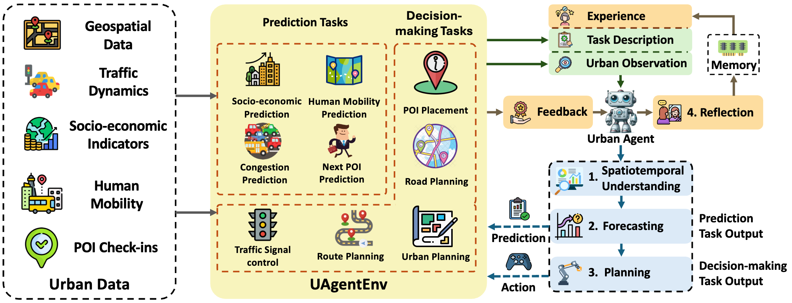
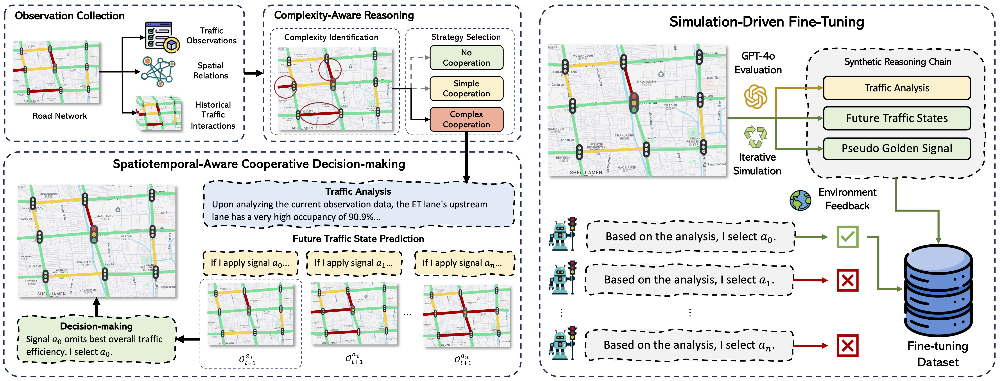
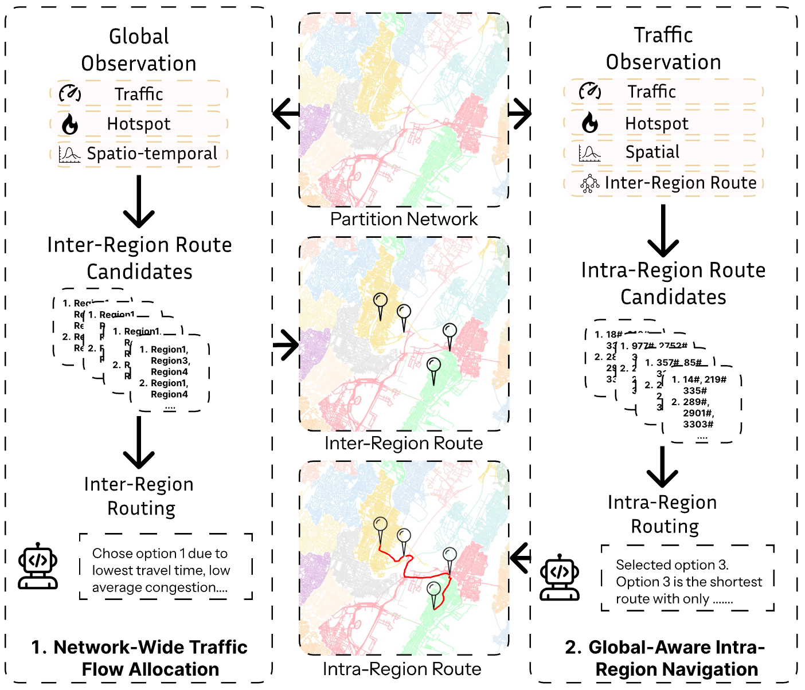
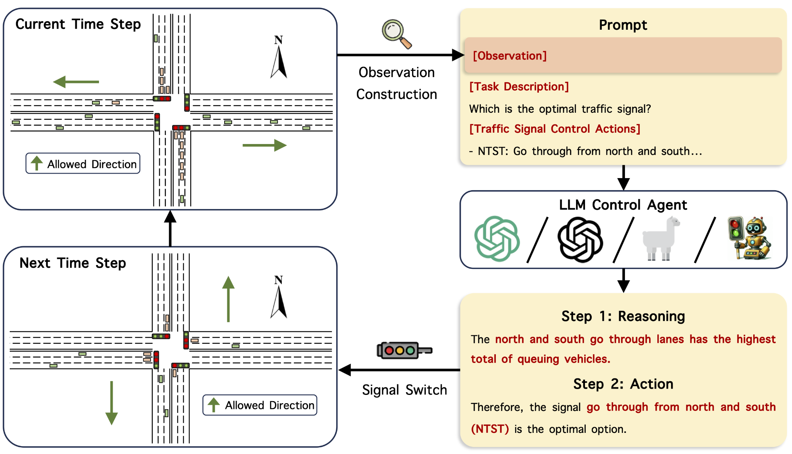
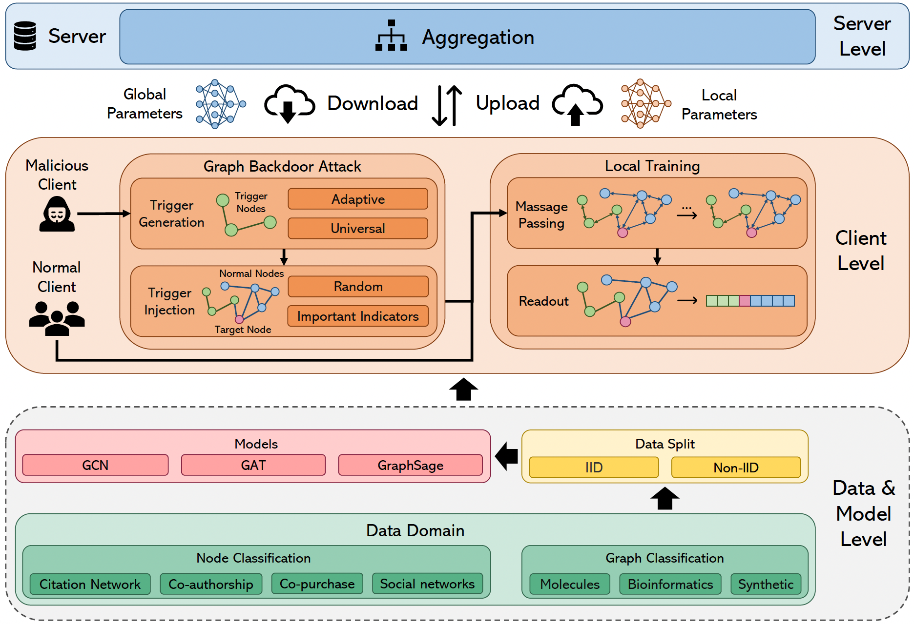
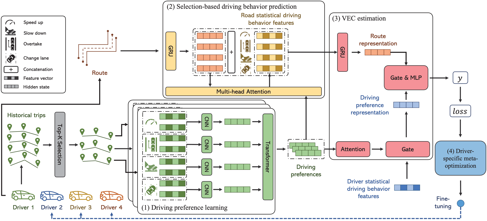
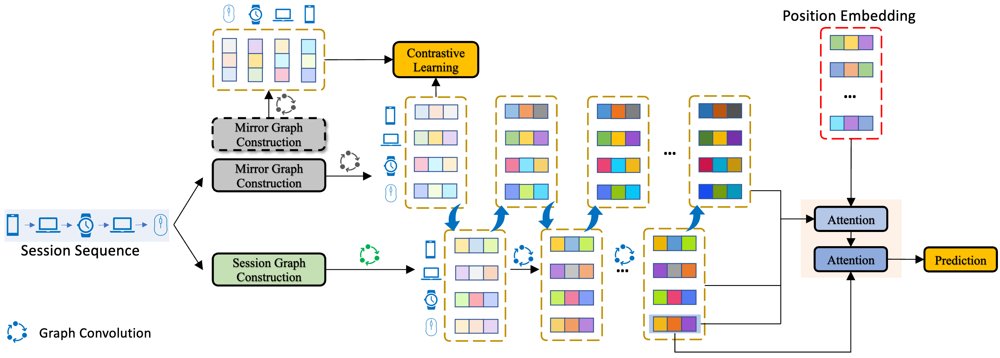
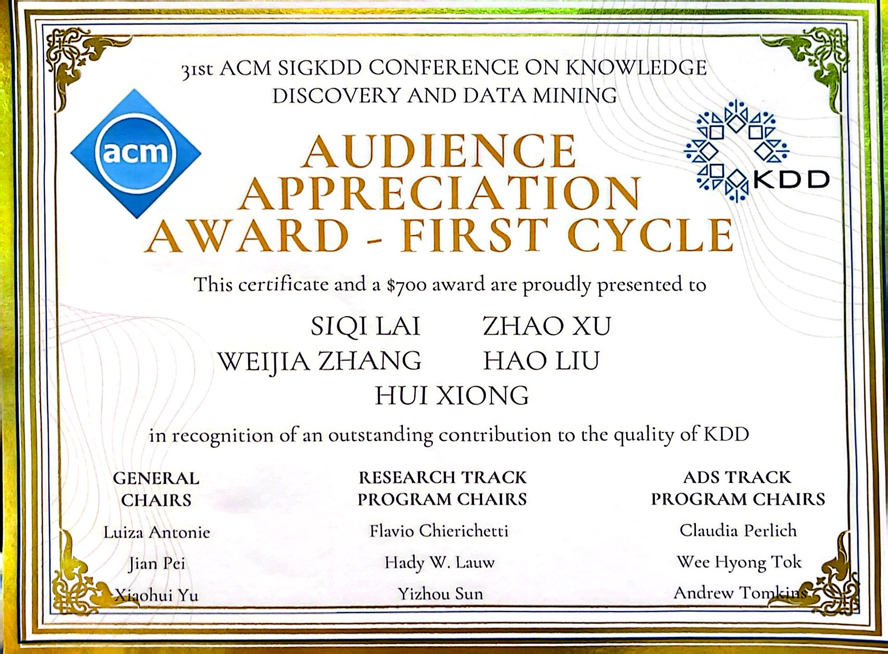
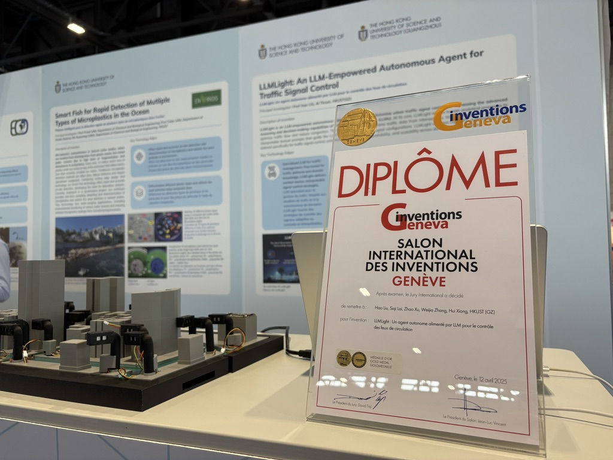
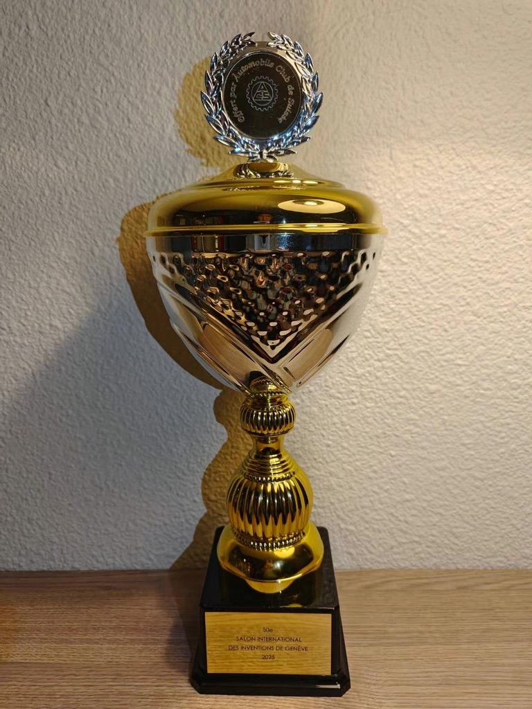

USTBench: Benchmarking and Dissecting Spatiotemporal Reasoning of LLMs as Urban Agents
The Fourteenth International Conference on Learning Representations
Ph.D. Student · HKUST(GZ)
Urban Intelligence & Data-Driven Urban Agents
I study how intelligent agents can understand, reason about, and act in complex urban environments. My work spans large language models, multimodal learning, multi-agent systems, and intelligent transportation.

01
I am a Ph.D. student at the Information Hub of The Hong Kong University of Science and Technology (Guangzhou).
I am supervised by Prof. Hao Liu and guided by Prof. Hui Xiong. Before joining HKUST(GZ), I received my B.Eng. from Wuhan University in 2022, where I was mentored by Prof. Chenliang Li.
My research centers on urban intelligence, particularly data-driven agents that learn from city-scale data and support real-world decision-making in traffic control, mobility, and navigation.
Photography, badminton, tennis, and Japanese language study (JLPT N3).
02

The Fourteenth International Conference on Learning Representations

The Fourteenth International Conference on Learning Representations

The ACM Web Conference 2026

Proceedings of the 31st ACM SIGKDD Conference on Knowledge Discovery and Data Mining
Gold Medal & Special Award, Geneva 2025 · KDD Audience Appreciation Award

Joint European Conference on Machine Learning and Knowledge Discovery in Databases

Proceedings of the 29th ACM SIGKDD Conference on Knowledge Discovery and Data Mining

Proceedings of the 45th International ACM SIGIR Conference
03

ACM SIGKDD 2025 · LLMLight

50th International Exhibition of Inventions Geneva, Switzerland

50th International Exhibition of Inventions Geneva, Switzerland

Wuhan University
Computer vision-based traffic scene smart application · Nanjing, China
04
Photography is how I pause, observe, and notice the structure of places beyond datasets and models.


05
I welcome conversations and collaborations around urban intelligence, foundation-model agents, and intelligent transportation systems.
slai125[at]connect.hkust-gz.edu.cn